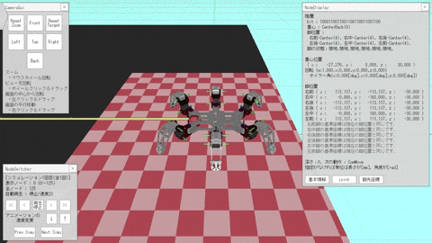
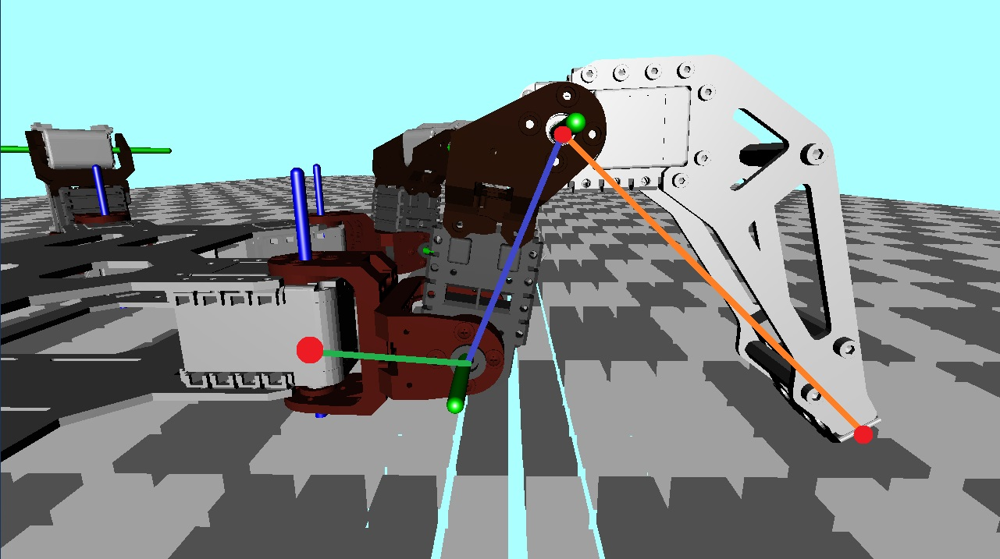

研究のために開発したツール
シミュレータ
この研究のため，グラフ探索よる自由歩容パターン生成の結果をグラフィカルに表示するシミュレータを開発しました．
先行研究でも，同様の機能を持つシミュレータが開発されていましたが，上からの俯瞰した視点でしかカメラを動かせないことや，
画面表示クラスとロジッククラスが分離されていないことなどが課題でした．
私はゲーム開発の経験を活かし，より使いやすく，拡張しやすいシミュレータを開発しました．
シミュレータのソースコードは私のレポジトリから確認できます．
また，ドキュメントはこちらから確認できます．
機能
- 歩容パターンの表示
- カメラの回転・移動
- 歩容パターンの再生・停止
- 歩容パターンの再生速度の変更
- 歩容パターンの再生位置の変更
工夫した点
- カメラの操作をより直感的にするため，一般的な3Dビューアーのように，マウス操作でカメラを回転・移動させる機能を追加しました．
- シミュレータの拡張性を高めるため，画面表示クラスとロジッククラスを分離しました．
- より高速な計算を行うため，位置ベクトルやクォータニオンの計算をするクラスを自作しました．
- シミュレータの使い方をより分かりやすくするため，Doxygenを使って簡易にドキュメントを追加できるようにしました．
- google c++ style guide をベースにして，統一した記述でコーディングを行いました．

↑歩行シミュレーションの様子
 ↑ロボットの可動範囲を確認する様子
↑ロボットの可動範囲を確認する様子
↑ロボットの可動範囲を確認する様子
可動範囲ビューアー
ロボットの脚の可動範囲は3次元の領域になりますが，これを2次元で表現することで，可動範囲を直感的に理解しやすくなります．
そこで，ロボットの脚の可動範囲を2次元で表示する可動範囲ビューアーを開発しました．
Pythonのmatplotlibを用いて，ロボットの脚の可動範囲を直感的に理解できるようにしました．
逆運動学解の算出に失敗した場合や，脚が胴体に干渉する場合，関節が可動範囲外にある場合は，関節や脚の部分が赤く表示されます．
また，マウス操作で脚先座標を変更できるようになっており，ロボットの脚の可動範囲を確認する際に便利です． 加えて，グラフの隣にある表には，各関節の角度やサーボ指令値を表示しており，ロボットの制御を行う際に参考になります．
また，マウス操作で脚先座標を変更できるようになっており，ロボットの脚の可動範囲を確認する際に便利です． 加えて，グラフの隣にある表には，各関節の角度やサーボ指令値を表示しており，ロボットの制御を行う際に参考になります．
機能
- 可動範囲の表示
- マウスによる脚先座標の変更
- 脚先座標から逆運動学解の算出と結果の表示
- 画像の保存
- 脚力の図示
工夫した点
- 脚の表示，可動範囲の表示，表の表示などをそれぞれ別クラスにし，必要に応じて組み替えられるように設計しました．
- マウス操作による，直感的な図示ができるようにしました．
- 逆運動学解が2つ出た場合は，すべての関節が可動範囲内に入っているものを表示するようにしました．
 ↑ロボットの可動範囲を確認する様子
↑ロボットの可動範囲を確認する様子

↑実際のロボット脚を横から見た様子